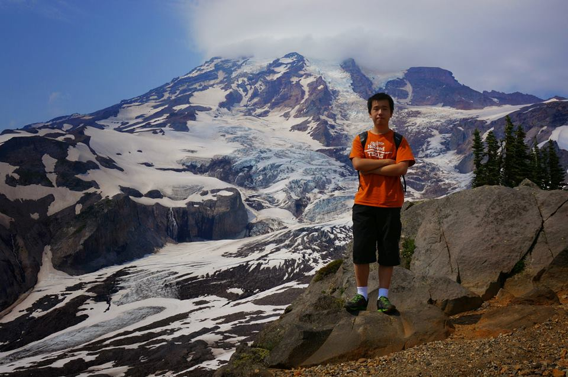

Skyline Trail in Mt Rainier National Park. July 2014.
Photo credit to Junjie Guan
Shun Zhang 张舜
I'm in the final (fifth) year of Integrated BS/MS Program of Computer Science in University of Texas at Austin, as of Fall 2014.
I'll graduate in May 2015, expected. I will apply for Ph.D. program starting in Fall 2015.
My research interests are reinforcement learning and robotics.
Research
Publication
- Tsz-Chiu Au, Shun Zhang, and Peter Stone.
Semi-Autonomous Intersection Management (Extended Abstract).
Autonomous Agents and Multiagent Systems (AAMAS), 2014.
Industrial Experience
- SDE Intern at Amazon, Seattle, WA. Summer 2014.
- SDE Intern at Semantic Designs, Austin, TX. Summer 2013.
Teaching Assistantship
Project Reports
- Programming Languages: Full Lisp Interpreter, Fall 2012
pdf
- Reinforcement Learning: N-armed bandit Problem, Spring 2013
html
- Reinforcement Learning: Eligibility Traces, Spring 2013
html
- Reinforcement Learning: Bootstrapping with Function Approximation, Spring 2013
html
- Reinforcement Learning: Transfer Learning in Gridworld, Spring 2013
pdf
- Reinforcement Learning: Structured Exploration for Relational RL, Spring 2013
- Autonomous Robots: Action Selection in ASAMI, Fall 2013
- CS 370: Application of TEXPLORE on Atari Games, Fall 2013
More About Me
GitHub, LinkedIn.
Contact Me
jensen.zhang at utexas.edu